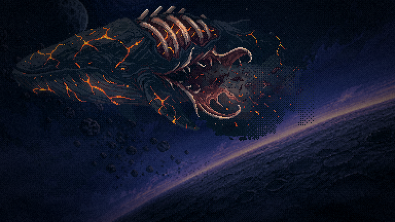
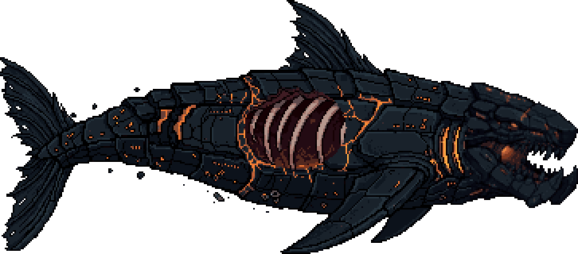
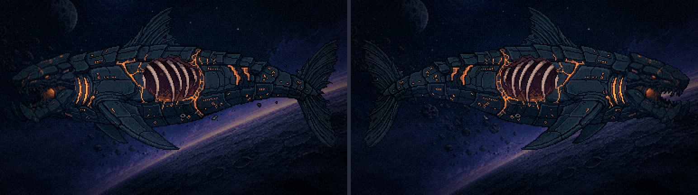
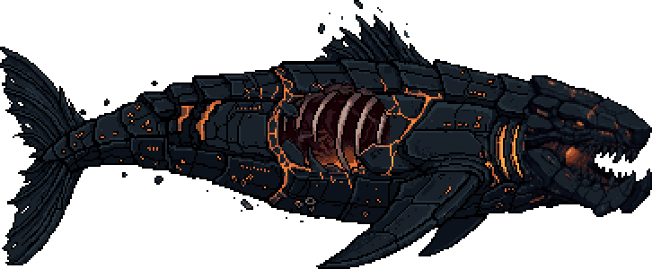
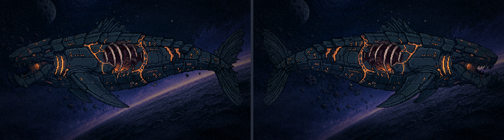
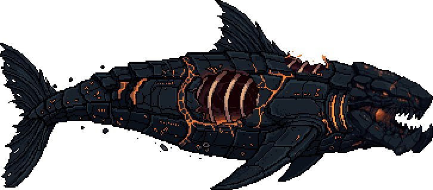
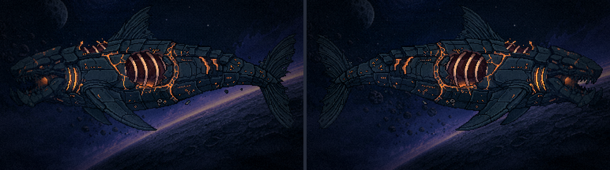
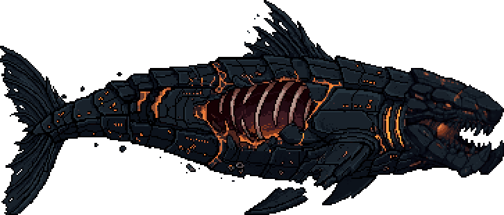
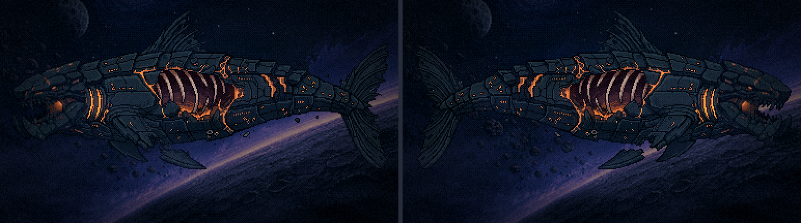

Leviatã enfraquecido · o bicho do final
Bloco D, passo 2 · 18/10/2026 · feito sobre a base aprovada (cabeça 0,7, emenda 42), sem gerar outro bicho. ← a mistura
Como foi feito. O PixelLab repintou só algumas regiões da base aprovada, uma por vez e com o resto como contexto. O resultado volta só dentro de cada região, com a paleta da base mais o osso e o carmim do Leviatã final de hoje. Fora das regiões, nenhum pixel mudou.
Na cena: é o capítulo 4 de verdade (a ferida), com o jogo pausado e o corpo trocado, nas duas orientações: olhando para a esquerda, como hoje, e para a direita, como a base foi desenhada. Escondi a camada de lava de hoje, as partículas e a nave.
O que eu preciso de você:
- qual grau de ferimento segue;
- a orientação na cena;
- se ele está ferido o bastante. O de hoje está muito mais destruído (rachaduras pelo corpo todo, a boca de costelas escancarada).
Hoje, para comparar

A · Ferida única o mínimo


B · Ferida + dorsal rasgada


C · Ferida + casco arrancado


D · Pesado a minha aposta


O que falta em qualquer escolha
- ferida A borda do rombo está oval demais, porque seguiu a forma da máscara. No escolhido, refaço com uma máscara de contorno irregular.
- inclinação O de hoje desce na diagonal rumo à lua, e a base é horizontal. A inclinação se assa em pixel, não se gira em código.
- lava Na cena, a lava fica numa camada à parte que esmorece (o anúncio do capítulo 7). A separação sai do escolhido, como no
_recortar-leviata.mjs. - ferida na tela A nave sai de
FERIDA_X/Y, que hoje vale 218, 75. Com o corpo novo é preciso remedir. - achado O bicho antigo aparece em mais dois lugares da cena final que o START não listava. Na reentrada do capítulo 5 (
f8-reentrada-escalas), caindo em chamas. Na carcaça dos capítulos 6 e 7, pintada dentro do fundo do sobrevoo (f8-sobrevoo-frio+ a folha da lava). Os dois saem deste enfraquecido.
Ferramentas: scripts/_leviata/_gerar-ferido.mjs (inpaint por regiões, semente 51) e _capturar-final.mjs (o capítulo 4 pausado com o corpo trocado).